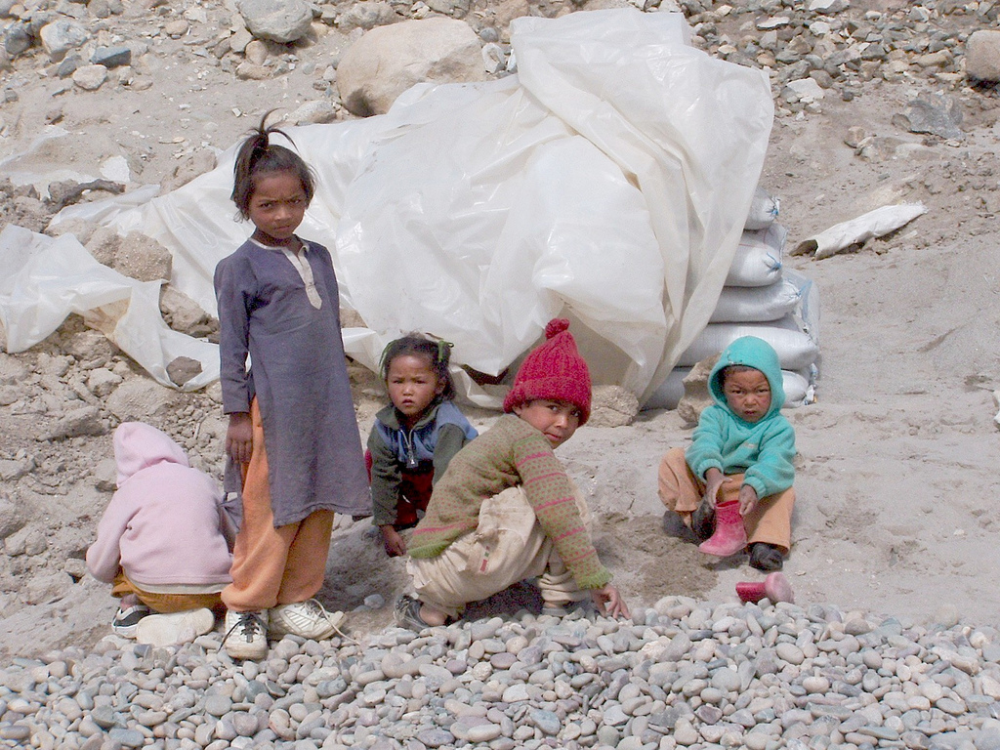

Please enter your information below to receive urgent fundraising updates and other spam
The United Nations Commission on Refugees currently estimates over 50 million people worldwide are refugees or at risk for being forcefully displaced from their homes
Last year UNICEF estimated that over 25,000 unaccompanied children arrived in Europe alone Original photo here by flickr user jassmina. Licensed under Creative Commons 2.0
Luckily, there are a lot of brave, kind and smart people in the world working to help
If we examine the homepage for Doctors Without Borders there are many noticeable features that make the page easy to navigate. The buttons to donate or volunteer are pinned to the top of the screen, and the links to social media are prominently displayed and pinned both to the left and bottom of the screen. Some might consider this design to be intrusive but for a non-profit the number of homepage visits likely does not drive as many donations as social campaigns. The most recognizable HTML elements are lists of links (which include relative links and global addresses).